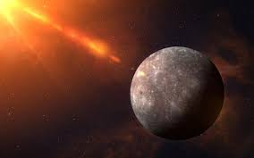
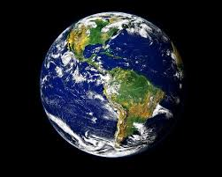
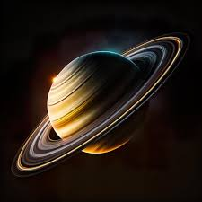
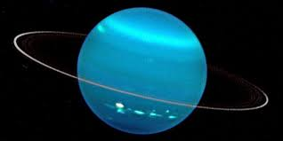

Mercúrio é o planeta mais próximo do Sol. Por estar tão próximo a ele, as temperaturas em Mercúrio variam drasticamente, chegando a atingir aproximadamente 430 °C durante o dia e caindo para -180 °C durante a noite. Devido à sua proximidade com o Sol, a gravidade em Mercúrio é mais fraca, aproximadamente 38% da gravidade na Terra. Infelizmente, a atmosfera é extremamente fina e composta principalmente por gases rarefeitos, tornando-a incapaz de sustentar a vida como a conhecemos. Não há luas em órbita ao redor de Mercúrio e, até o momento, nenhum ser humano teve a oportunidade de pisar no seu solo
 Vênus é um planeta incrivelmente quente, com temperaturas médias que atingem cerca de 470 °C, tornando-o o planeta mais quente do Sistema Solar. Sua atmosfera densa é composta principalmente de dióxido de carbono, com nuvens de ácido sulfúrico. Nenhum ser humano jamais pisou em Vênus devido às suas condições inóspitas e à impossibilidade de abrigar vida como a conhecemos. Não há água líquida em sua superfície e sua pressão atmosférica é cerca de 92 vezes maior que a da Terra.
Vênus é um planeta incrivelmente quente, com temperaturas médias que atingem cerca de 470 °C, tornando-o o planeta mais quente do Sistema Solar. Sua atmosfera densa é composta principalmente de dióxido de carbono, com nuvens de ácido sulfúrico. Nenhum ser humano jamais pisou em Vênus devido às suas condições inóspitas e à impossibilidade de abrigar vida como a conhecemos. Não há água líquida em sua superfície e sua pressão atmosférica é cerca de 92 vezes maior que a da Terra.

Nosso planeta azul, a Terra, é o terceiro do Sistema Solar. A distância média entre a Terra e o Sol é de aproximadamente 149,6 milhões de quilômetros. É o único planeta conhecido por abrigar vida, com água líquida, atmosfera propícia para manter o oxigênio e uma variedade incrível de ecossistemas e seres vivos. A gravidade na Terra nos mantém firmemente plantados em seu solo, proporcionando condições favoráveis ao desenvolvimento humano. Até o momento, a única pessoa a caminhar na superfície da lua foi Neil Armstrong, em 20 de julho de 1969.
 Marte, apelidado de "Planeta Vermelho" devido à cor de sua superfície, é o quarto planeta do Sistema Solar. A proximidade de Marte com o Sol permite que ele tenha uma atmosfera fina composta principalmente de dióxido de carbono. A temperatura média é de cerca de -60 °C, tornando-o frio e inóspito. Embora não exista água líquida em grande quantidade na superfície de Marte, já foram encontrados indícios de sua existência no passado. Apesar de suas semelhanças com a Terra, Marte não tem a capacidade de sustentar a vida como a conhecemos. Não há registros de nenhuma pessoa que tenha desembarcado em Marte até o momento.
Marte, apelidado de "Planeta Vermelho" devido à cor de sua superfície, é o quarto planeta do Sistema Solar. A proximidade de Marte com o Sol permite que ele tenha uma atmosfera fina composta principalmente de dióxido de carbono. A temperatura média é de cerca de -60 °C, tornando-o frio e inóspito. Embora não exista água líquida em grande quantidade na superfície de Marte, já foram encontrados indícios de sua existência no passado. Apesar de suas semelhanças com a Terra, Marte não tem a capacidade de sustentar a vida como a conhecemos. Não há registros de nenhuma pessoa que tenha desembarcado em Marte até o momento.
 . Júpiter é o maior planeta do Sistema Solar e está localizado a cerca de 778 milhões de quilômetros do Sol. Com uma atmosfera composta principalmente de hidrogênio e hélio, Júpiter possui uma temperatura média de -145 °C. Este gigante gasoso não tem um solo sólido e, devido à sua composição gasosa, não possui a capacidade de sustentar formas de vida conhecidas. Júpiter tem 79 luas conhecidas, sendo as quatro maiores Io, Europa, Ganimedes e Calisto.
. Júpiter é o maior planeta do Sistema Solar e está localizado a cerca de 778 milhões de quilômetros do Sol. Com uma atmosfera composta principalmente de hidrogênio e hélio, Júpiter possui uma temperatura média de -145 °C. Este gigante gasoso não tem um solo sólido e, devido à sua composição gasosa, não possui a capacidade de sustentar formas de vida conhecidas. Júpiter tem 79 luas conhecidas, sendo as quatro maiores Io, Europa, Ganimedes e Calisto.

Com seus icônicos anéis, Saturno é o sexto planeta a partir do Sol, cerca de 1,4 bilhões de quilômetros de distância. Como Júpiter, Saturno também é um gigante gasoso, com aproximadamente 95 vezes a massa da Terra. Sua temperatura média é ainda mais baixa, em torno de -178 °C. Saturno tem 82 luas conhecidas, sendo a lua Titã a maior e mais intrigante. No entanto, assim como Júpiter, Saturno não oferece condições propícias para a vida humana.

Urano é o sétimo planeta do Sistema Solar, localizado a uma distância média de 2,8 bilhões de quilômetros do Sol. Possui uma atmosfera composta principalmente de hidrogênio e hélio, junto com traços de metano, que dão ao planeta sua cor azul-esverdeada característica. A temperatura média em Urano é extremamente fria, chegando a -224 °C. Apesar de suas luas interessantes, como Miranda e Titânia, Urano é considerado um gigante gasoso sem a possibilidade de abrigar vida como a conhecemos.
 Netuno é o oitavo e último planeta do Sistema Solar, localizado a cerca de 4,5 bilhões de quilômetros do Sol. Com uma atmosfera semelhante à de Urano, Netuno é conhecido por suas temperaturas extremamente frias, com uma média de -215 °C. Tendo também uma composição gasosa, é improvável que Netuno tenha a capacidade de sustentar vida como a conhecemos. Por ser tão distante, ainda sabemos muito pouco sobre esse planeta em comparação com os mais próximos.
Netuno é o oitavo e último planeta do Sistema Solar, localizado a cerca de 4,5 bilhões de quilômetros do Sol. Com uma atmosfera semelhante à de Urano, Netuno é conhecido por suas temperaturas extremamente frias, com uma média de -215 °C. Tendo também uma composição gasosa, é improvável que Netuno tenha a capacidade de sustentar vida como a conhecemos. Por ser tão distante, ainda sabemos muito pouco sobre esse planeta em comparação com os mais próximos.